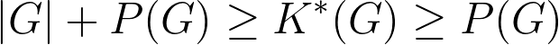

ABSTRACT
Although procedural generation is popular among game developers, academic research on the topic has primarily focused on new
applications, with some research into empirical analysis. In this
paper we relate theoretical work in information theory to the generation of content for games. We prove that there is a relationship
between the Kolomogorov complexity of the most complex artifact
a generator can produce, and the size of that generator’s possibility
space. In doing so, we identify the limiting relationship between
the knowledge encoded in a generator, the density of its output
space, and the intricacy of the artifacts it produces. We relate our
result to the experience of expert procedural generator designers,
and illustrate it with some examples.
THEOREM
For an ideal generator G where:
|G| is the length of the generator's source codeP(G) is the log of the generator's possibility spaceK*(G) is the highest Kolmogorov complexity among all the artefacts
we have the following inequalities:
